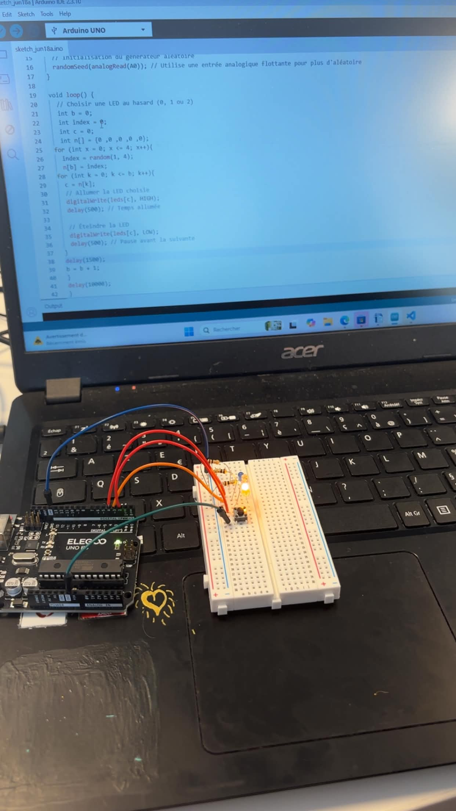
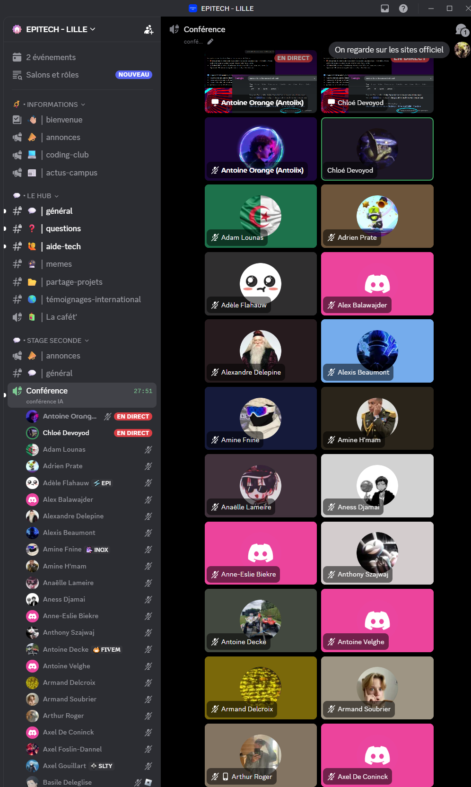
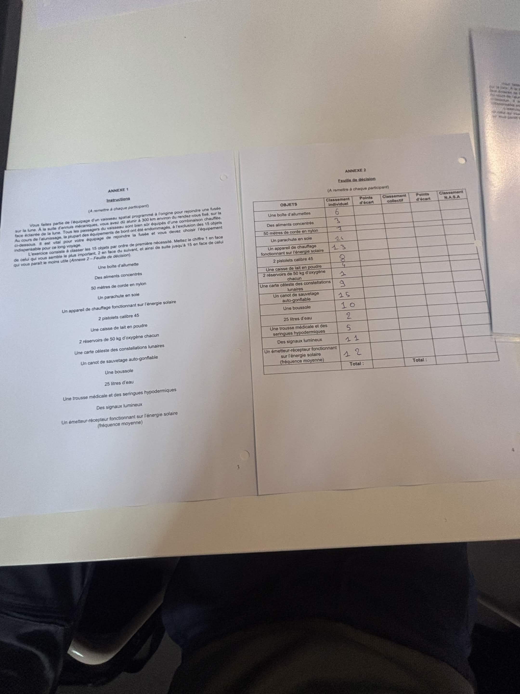

Voici les emplois du temps de mes 2 semaines de stage.

Voici les emplois du temps de mes 2 semaines de stage.
Sur cette première journée nous avons eu des petits jeux le matin pour apprendre à nous connaître ainsi qu'une visite du campus. L'après-midi nous avons commencé nos portfolios.
Sur la 2eme journé on a continuer nos portfolio apres nous avons eu une conférence sur la cybersécurité et l'apres midi nous avons fait de l'OSINT
Sur la 3eme journé on a fait un jeux nomé poke poireau apres nous avons eu une conférence sur l'ia et et l'apres midi
on a eu une activité sue l'algorithmie on a fait des ia qui font des code caesar et une ia qui dessine une fleure
Sur la 4eme journé on a fait un atelier nommé canard nous avons fait des lego pour voir toute les possibilté de faire un cnard apres nous avons eu une conférence nommé apprendre a apprendre
l'apres midi nous avons fait de l'arduino

Sur la 5eme journé on travaillé en distanciel le matin on a eu une conférence sur l'ia au matin et l'apres midi on a continuer notre portfolio

Sur la 6eme journé le matin on a eu le témoignage d'étudiants apres une conférence des métiers du numérique et l'aprem on a continuer nos portfolio
Sur la 7eme journé on a fait une activité nommé NASA apres on a eu une conférence sur l'ia google et l'aprem on a fait une activité morpion IA

Sur la 8eme journé on a eu 2 connférence une sur les metier des jeux video et une sur les metier de la cybersécurité l'apres midi on a fait un snake en Java script
Sur la 9eme journé on a encore travaillé en distanciel le matin on a continué nos portfolio et nos rapport de stage (pour ce qui en ont) l'apres midi a 14h Deborah a répondu a nos question pour terminé les rapport et apres sa nous avons fait comme au matin
Sur la journé 10 aujourd'hui ce matin des personne sont passer on a fait les papier ect et l'apres midi on présente nos portfolio on passe une apres midi cool on a fait un gouter e